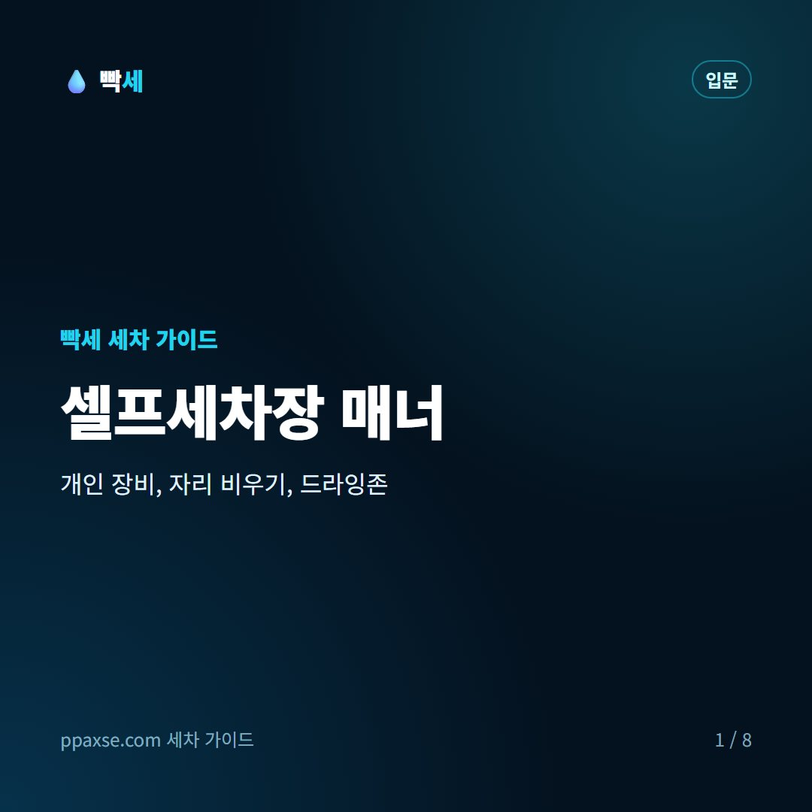
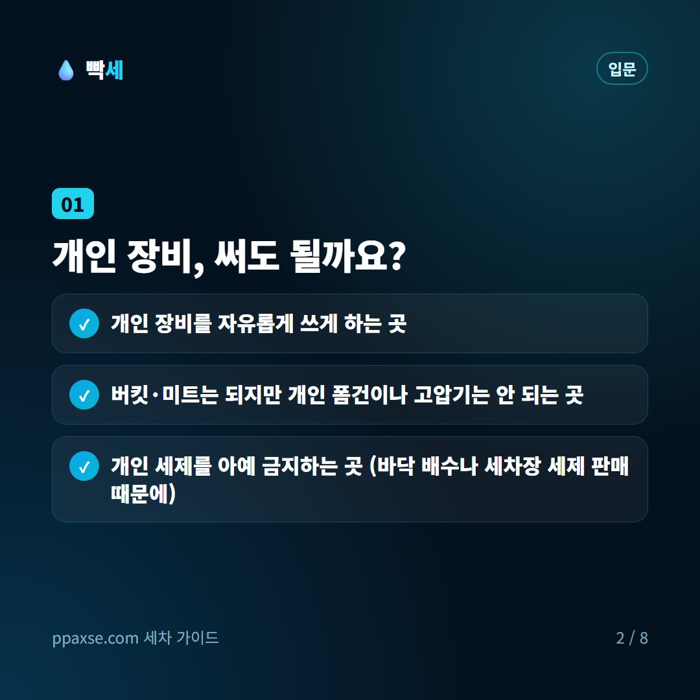
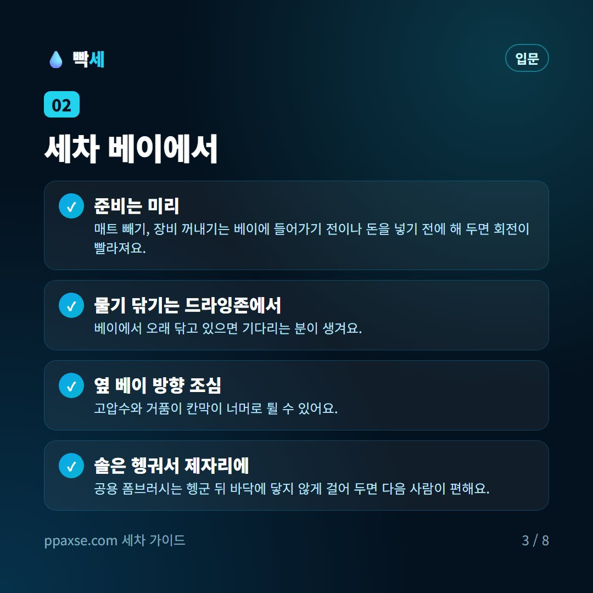
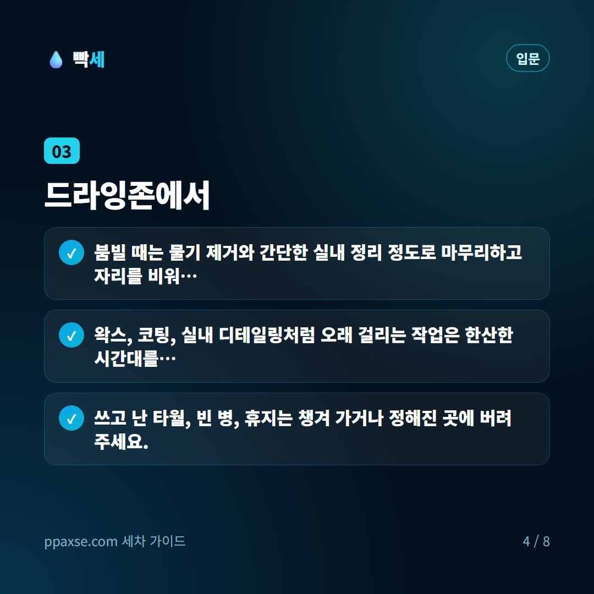
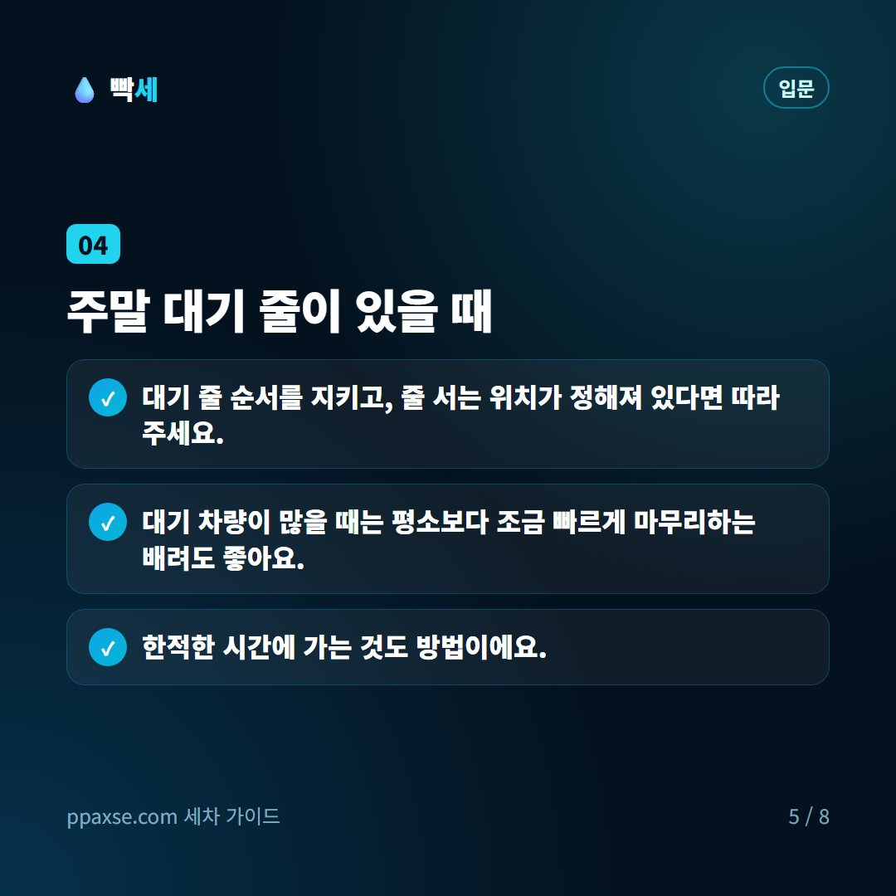
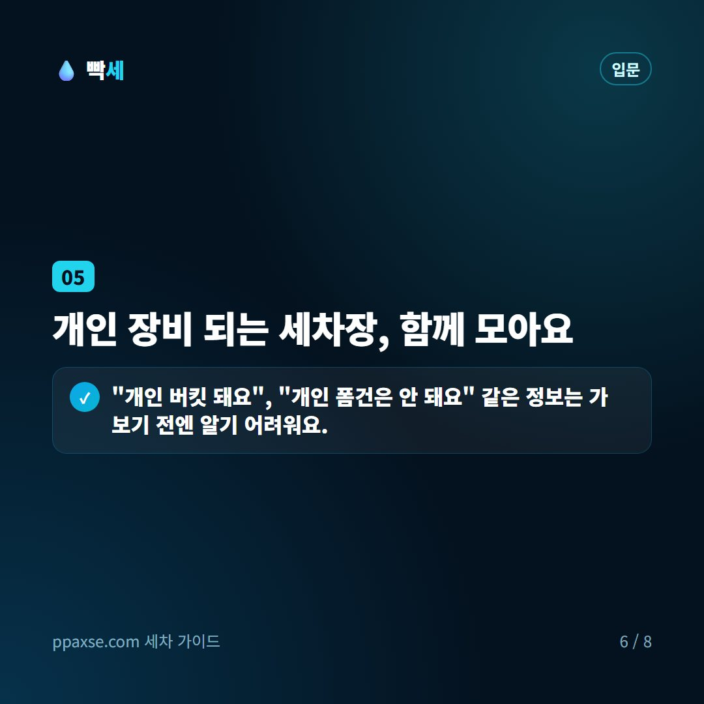

셀프세차장 매너 — 개인 장비, 자리 비우기, 드라잉존
2026-11-20 · 빡세 세차 가이드
셀프세차장은 여러 사람이 같은 공간을 나눠 쓰는 곳이에요. 특히 주말 오후처럼 붐빌 때는 작은 배려가 서로의 세차 시간을 편하게 만들어요. 세차장마다 규칙이 다르니, 가장 먼저 그 세차장 안내문을 확인해 주세요. 아래는 많은 곳에서 통하는 기본 매너예요.

개인 장비, 써도 될까요?

버킷, 개인 폼건, 개인 세제를 쓰는 분들이 많아요. 그런데 세차장마다 허용 여부가 달라요.
- 개인 장비를 자유롭게 쓰게 하는 곳
- 버킷·미트는 되지만 개인 폼건이나 고압기는 안 되는 곳
- 개인 세제를 아예 금지하는 곳 (바닥 배수나 세차장 세제 판매 때문에)
안내문에 없다면 사장님께 한 번 물어보는 게 가장 깔끔해요.
세차 베이에서

- 준비는 미리 — 매트 빼기, 장비 꺼내기는 베이에 들어가기 전이나 돈을 넣기 전에 해 두면 회전이 빨라져요.
- 물기 닦기는 드라잉존에서 — 베이에서 오래 닦고 있으면 기다리는 분이 생겨요. 많은 세차장이 베이에서 물기 닦기를 막아 두기도 해요.
- 옆 베이 방향 조심 — 고압수와 거품이 칸막이 너머로 튈 수 있어요. 옆 차가 있을 때는 방향을 조금 신경 써 주세요.
- 솔은 헹궈서 제자리에 — 공용 폼브러시는 헹군 뒤 바닥에 닿지 않게 걸어 두면 다음 사람이 편해요.
드라잉존에서

- 붐빌 때는 물기 제거와 간단한 실내 정리 정도로 마무리하고 자리를 비워 주는 분들이 많아요.
- 왁스, 코팅, 실내 디테일링처럼 오래 걸리는 작업은 한산한 시간대를 고르거나, 장시간 작업이 가능한 자리가 있는지 확인해요.
- 쓰고 난 타월, 빈 병, 휴지는 챙겨 가거나 정해진 곳에 버려 주세요.
주말 대기 줄이 있을 때

- 대기 줄 순서를 지키고, 줄 서는 위치가 정해져 있다면 따라 주세요.
- 대기 차량이 많을 때는 평소보다 조금 빠르게 마무리하는 배려도 좋아요.
- 한적한 시간에 가는 것도 방법이에요. 평일 낮이나 이른 아침이 비교적 여유로운 곳이 많아요.
💡 처음 셀프세차를 한다면 셀프세차장 처음 가는 날부터 읽어 보세요. 순서를 알고 가면 자연스럽게 빨라져요.
개인 장비 되는 세차장, 함께 모아요

"개인 버킷 돼요", "개인 폼건은 안 돼요" 같은 정보는 가 보기 전엔 알기 어려워요. 빡세 지도에서는 세차장 정보를 이용자들이 함께 채워가고 있어요. 다녀온 세차장의 규칙을 한마디로 남겨 주세요. 지역별 목록은 지역별 세차장 모음에서 볼 수 있어요.
🗺️ 우리 동네 세차장, 지도에서 한눈에 보세요
☀️ 오늘 세차하기 좋은 날일까요?
날씨 보고 세차할 날 고르기10일 달력 보기 ›
셀프세차·노터치·손세차를 종류별로 골라 보고, 폼건·온수·하부세차 같은 시설 정보도 확인할 수 있어요.
🗺️ 세차장 지도 열기✏️ 자주 가는 세차장에 한마디 남기기🎁 한마디를 남기면 가입 없이도 매주 기프티콘 추첨에 응모돼요.